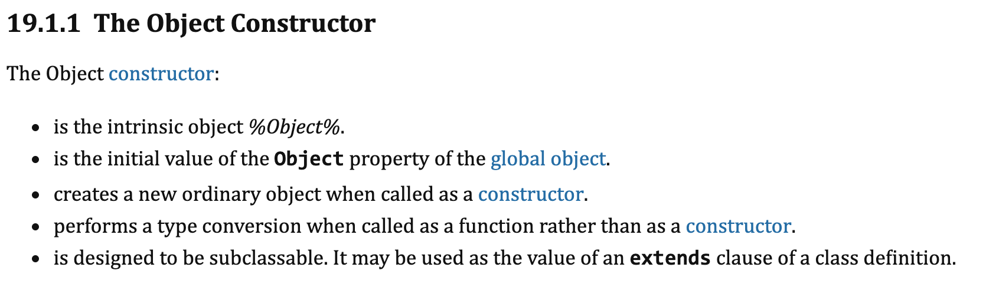
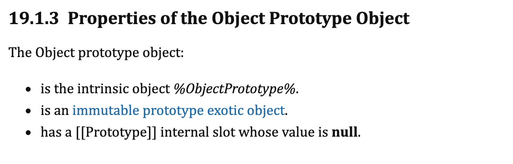
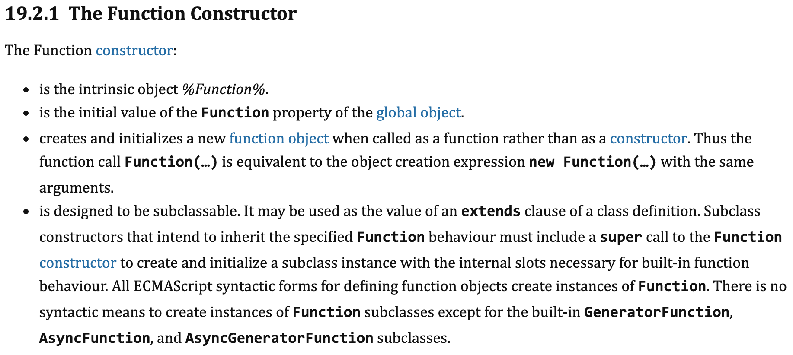
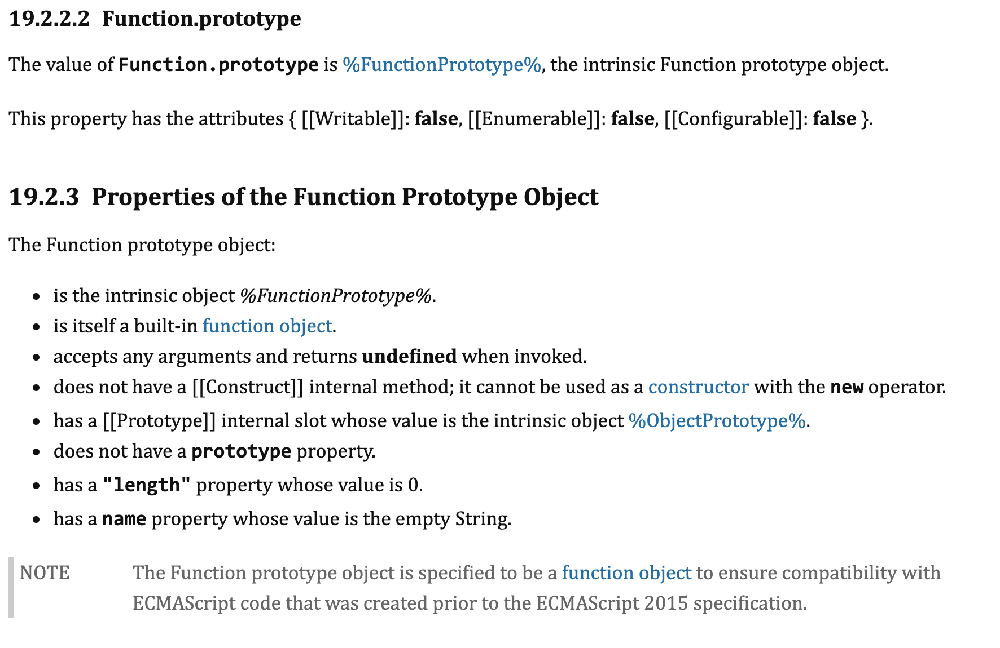

Function.prototype这个特殊的函数对象，导致在分析原型链的时候，容易造成困扰
问题
先看一段代码1
2
3
4
5Object instanceof Object // true
Object instanceof Function // true
Function instanceof Object // true
Function instanceof Function // true
从代码上来看，是Function和Object互相为各自的构造函数，这是为何？
名词解释
Object
1
2
3typeof Object // function
Object instanceof Function // false
Object.__proto__ === Function.prototype // true先看规范中怎么说

说明他是一个内置对象，普通函数调用就是做类型转换，用new调用就是返回一个普通对象。
从代码中看它是Function.prototype构造出来的实例Object.prototype
1
2
3typeof Object.prototype // object
Object.prototype instanceof Object // false
Object.prototype.__proto__ === null // true
Object.prototype是一个对象，但它不是由Object创建的，它是一个内置对象。这个对象是规范规定的所有对象的原型链的终点，因为其内置[[prototype]]属性为null。Function
1
2typeof Function // function
Function instanceof Object // true通过以上代码，显而易见，Function是Object的实例，再看看规范中的定义
Function.prototype
1
2
3typeof Function.prototype // function
Function.prototype instanceof Function // false
Function.prototype instanceof Object // true以上代码会带来疑惑，typeof的结果是个function，但是又不是Function的实例，反而是Object的实例。也就是说，他是个函数对象，但是内部[[prototype]]属性是Object.prototype。说明它是一个特殊函数。看看规范中是怎么写的

明确规定了它：- 是%FunctionPrototype%内置对象，
- 是function object
- 可以接收任何参数执行，返回undefined
- 没有[[Construct]]内置方法，所以不能被当做构造函数用new调用
- 有 [[Prototype]] 内置属性，值为 %ObjectPrototype%.
- 作为函数没有prototype属性
- 作为函数其length属性为0
- Function.prototype.name为空字符串
解答
- 规范中规定Object是个函数，且其内置属性proto 是Function.prototype。所以Object instanceof Function为true。而规范中又规定Function.prototype是个函数对象，也就是他的内置属性proto是Object.prototype。所以Object instanceof Object也为true
- 规范中规定Function的内置属性proto是Function.prototype。从字面意思来说，就是说他是由自身构造出来的一个对象。所以Function instanceof Function为true。然后又因为Function.proto.proto也就是Function.prototype.proto是Object.prototype，所以Function instanceof Object也是true
总结
- Object是个函数，所以其proto是Function.prototype，这个好理解
- Function也是一个函数，所以其proto是Function.prototype，这个也好理解
- 特殊之处在Function.prototype，原型链这种机制必须有终点，规范中规定所有对象的原型链终点是Object.prototype。所以Function.prototype的proto是Object.prototype。但是又把Function.prototype设计为一个函数，所以导致了迷惑。但是如果把它的proto设置成和普通函数一样是Function.prototype。那原型链就死循环了，所以只能是Object.prototype。可以说Function.prototype是唯一一个不继承Function.prototype的函数
相关博文
从proto和prototype来深入理解JS对象和原型链
【进阶5-3期】深入探究 Function & Object 鸡蛋问题